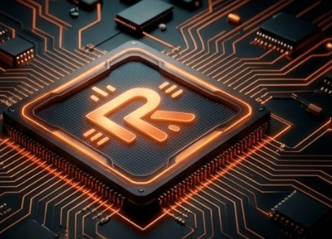
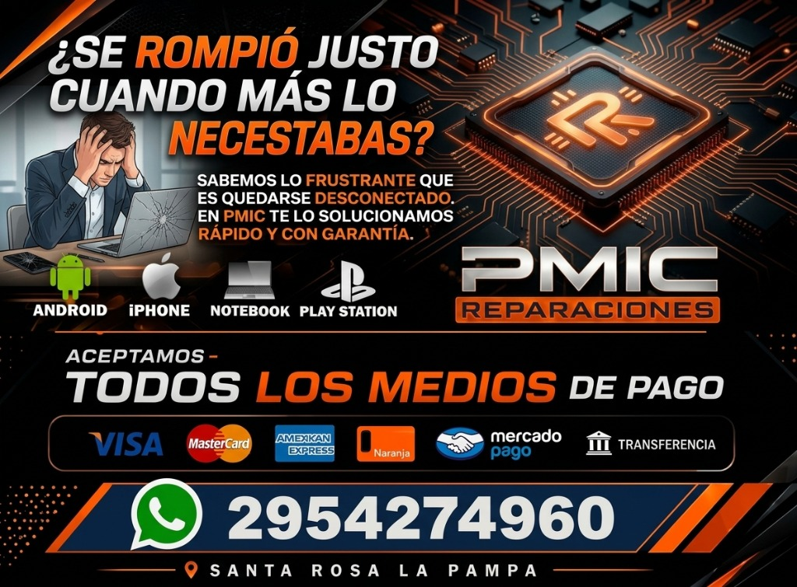
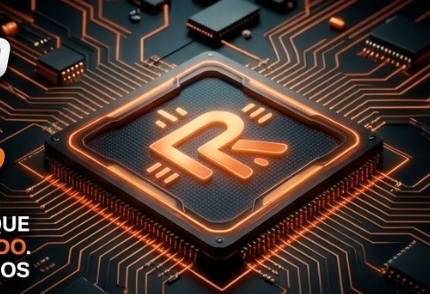

PMIC REPARACIONESMicrosoldadura y diagnóstico avanzado de placas para Celulares, Notebooks y Consolas.
Consultar por WhatsAppCambio de pantallas, baterías, puertos de carga, reparación de daños por agua y fallas complejas de placa.
Diagnóstico de cortes de energía, reparación de placa madre, cambio de displays y mantenimiento térmico.
Mantenimiento y reparación de PlayStation, Xbox y Nintendo. Cambio de puertos HDMI y chipsets.
Trabajos reales de microsoldadura y banco de pruebas.


"Excelente atención y honestidad. Repararon la placa de mi celular que en otros lados me daban por perdido."
- Cliente de Google Maps"Muy rápidos y profesionales con el arreglo de la notebook. Súper recomendables en Santa Rosa."
- Cliente de Google Maps"Impecable el trabajo de microsoldadura en la consola. Todo probado y garantizado."
- Cliente de Google MapsTodas nuestras reparaciones físicas cuentan con 30 días de garantía escrita conforme a la Ley de Defensa del Consumidor N° 24.240.
*La garantía aplica exclusivamente sobre el componente reparado o reemplazado. Quedan excluidos equipos que presenten humedad o líquidos, daños por caídas posteriores, fallas de software o intervención por terceros no autorizados.
Dirección: Av. Circunvalación Ing Marzo Sur 1587, L6300GUC Santa Rosa, La Pampa[cite: 11]
Horarios:
WhatsApp: 02954 27-4960[cite: 11]